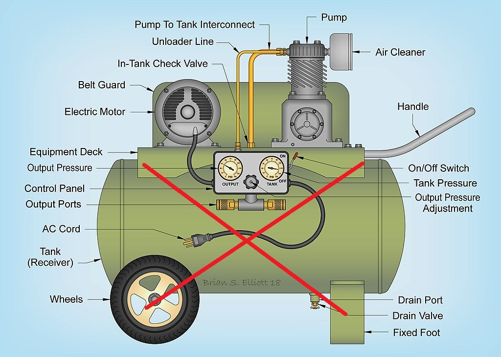
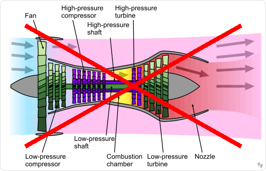

Newly-Invented Revolutionary Rotary Engines and New Jet Engines
Below are two newly invented rotary engines,
Rotary Internal Combustion Engine
Rotary Steam Engine (Prototype Completed)
Next-Generation Jet Engine
- By integrating a compact, lightweight rotary internal combustion engine and a high-performance air compressor with a jet engine, this invention provides the intake and compression functions required for a jet engine. This innovation will fundamentally address the shortcomings of traditional jet engines, potentially rendering them obsolete. (Detailed structure not disclosed at this time.)
[1] Rotary Internal Combustion Engine
[2] Rotary Steam Engine (worldwide patterns pending)
[3] Rotary Multi-Cylinder Air Compressor (worldwide patterns pending)
- This Rotary Multi-Cylinder Air Compressor achieves an air-filling speed tens to hundreds of times faster than traditional air compressors. It eliminates the need for large and bulky air tanks, significantly reducing overall cost and improving practicality and convenience.
Eliminating Air Tanks 1
[4] Next-Generation Jet Engine (worldwide patterns pending)
- The new jet engine adopts the propulsion principle of a rocket: It
features a cylindrical chamber that is sealed at one end and fitted with
a nozzle at the other. Using the previously described “Rotary
Multi-Cylinder Air Compressor,” high-speed compressed air is injected
into the sealed end of the cylinder. Fuel is then introduced and ignited
inside the chamber, producing high-pressure gases that are expelled at
high speed through the nozzle, generating powerful thrust—just like a
rocket. Traditional jet engines, with their complex structures and
extremely high costs, will be completely rendered obsolete.
- Detailed structure not disclosed at this time
Eliminating Old Design 2
- Because the new jet engine’s nozzles are virtually unrestricted in angle, aircraft equipped with it can perform vertical takeoffs and landings at any time. The era of relying on long runways for takeoff and landing will become a thing of the past.
 Eliminating Runway
Eliminating Runway
[5] Rotary Ceramic Engine with External Cylinder Combustion (worldwide patterns pending)
- This will be the most fuel-efficient, lowest-cost, and most
explosively powerful internal combustion engine.
- Detailed structure not disclosed at this time
Adapted from Wiki: Air Compressor↩︎
Adapted from Wiki: Turbofan↩︎
{kind=link}
{kind=link}